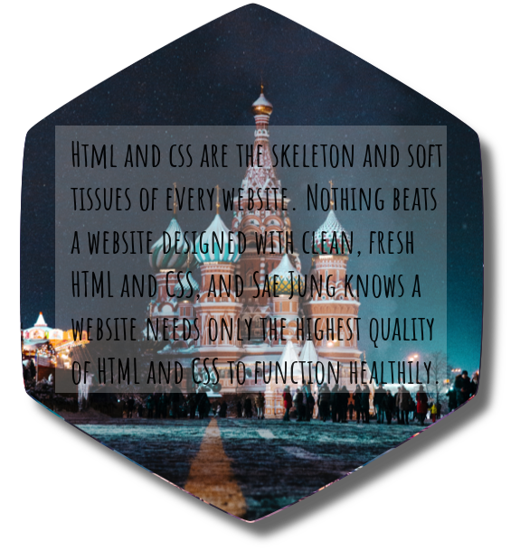
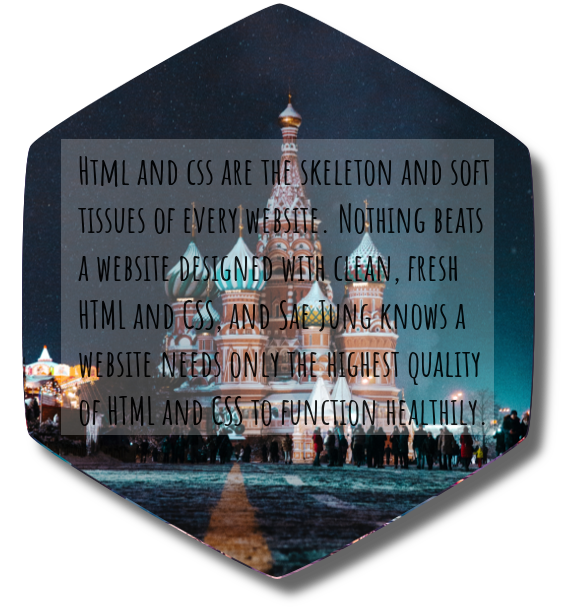
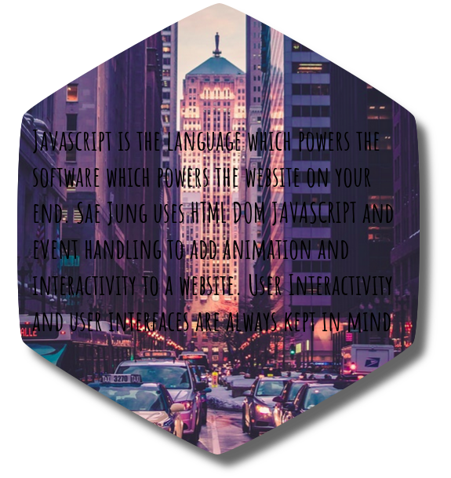
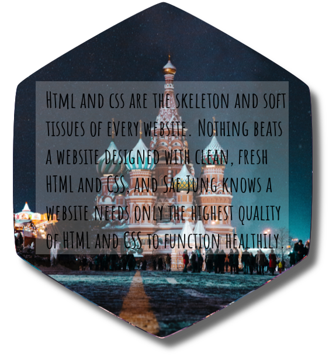

Every skeleton needs muscle and a coating of skin to keep all its internals in place. Every cake, no matter how soft and spongy, needs a layer of cream and icing to make it eater friendly and worthy.
The Front-End gives you the outer coating, the user-interactive sheet of software which operates on behalf of visitors and browsers. JavaScript, and its many frameworks and libraries , are working tirelessly to create a series of animations and platter of decorations for you to enjoy.
You have probably interacted with the Front End of websites before. All the icons, widgets, colors, fonts, designs, animations, videos, glowing neon shadows, and digital decorations you have seen were part of the Front-End.
Sae Jung has been desiging websites for over 3 years and designing clean, organized, and manageable websites is his passion.